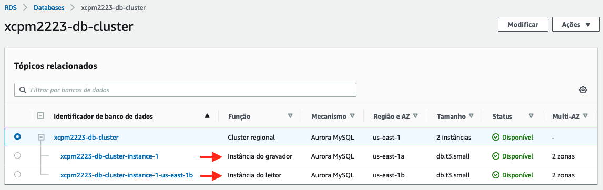

Paso 7: Proba da dispoñibilidade
Vamos agora comprobar como se comporta a nosa arquitectura desde o ponto de vista da dispoñibilidade usando unha aproximación baseada na inxección controlada de fallas. A inxección de fallas (Failure Injection) é unha compoñente chave da Enxeñaría do Caos (Chaos Engineering), que utiliza esta técnica para provocar situacións caóticas, daí o nome, que permitan testar hipóteses sobre a resiliencia das cargas de traballo. Consiste en simular eventos que poderían afectar a servizos en producción e analizar o comportamento das arquitecturas dos servizos, tratando de identificar que compoñentes non proporcionan unha resposta adecuada ante a ocorrencia de avarías.
Hai diferentes alternativas entre as que escoller á hora de preparar probas de inxección de fallas en AWS. Por exemplo:
- Usar o servizo Fault Injection Simulator (FIS).
- Simular as fallas usando os comandos da CLI de AWS, as opcións dispoñíbeis nas consolas dos servizos, ou o soporte nativo incluído nalgúns servizos (p.e. Aurora).
- Usar scripts, programas e/ou ferramentas (p.e. Chaos Toolkit ou Gremlin) que simulen as fallas mediante chamadas a API dos servizos.
Como o servizo FIS non está incluído nos laboratorios de AWS Academy, e as probas que vamos facer son simples, vamos inxectar as fallas usando unha combinación de comandos da CLI de AWS e consultas SQL para inxección de fallas dispoñíbeis en Aurora. Os escenarios que vamos probar son os seguintes:
- A avaría da instancia da aplicación.
- A avaría do volume do clúster de BD Aurora.
- A avaría da instancia primaria do clúster de BD Aurora.
Avaría na instancia da aplicación
Para simular unha avaría na instancia da aplicación vamos usar un comando da CLI de AWS para terminala. Fai o seguinte:
- Na consola de EC2 asegúrate de que só haxa unha instancia en execución.
- No terminal do laboratorio de AWS Academy, que xa ten a CLI de AWS configurada, executa os comandos seguintes para terminar a instancia:
# almacena o ID da instancia
instance_id=`aws ec2 describe-instances --filter Name=instance-state-name,Values=running | jq -r '.Reservations[0].Instances[0].InstanceId'`
# termina a instancia
aws ec2 terminate-instances --instance-ids $instance_id
Imaxe: inxección de fallas na instancia da aplicación usando a CLI de AWS.
- Comproba no histórico de actividade do grupo de autoescalamento como se termina a instancia e se lanza unha nova para repoñela.
Nota
Mentres se produce o cambio de instancia, recarga varias veces a páxina da aplicación para comprobar como se perde a conexión e, unha vez a nova instancia estea iniciada, volve recuperarse.
Imaxe: histórico do grupo de escalamento no que se amosa como se detectou que a instancia foi terminada e se iniciou unha nova para substituíla e manter a capacidade mínima configurada no grupo.
O comportamento observado na proba anterior pode non ser aceptábel en escenarios nos que se requira un tempo medio de restauración do servizo (MTTRS) inferior ao tempo necesario para repor a instancia afectada pola falla. Para evitar a perda de conexión coa páxina da aplicación, unha solución sería manter unha capacidade mínima de dúas instancias repartidas entre as dúas AZ do grupo de escalamento. Vamos repetir o experimento con esa configuración para verificar se se comporta consonte ao agardado. Fai o seguinte:
- Cambia as propiedades capacidade desexada e capacidade mínima a 2 e a capacidade máxima a 4 na configuración do tamaño do grupo de autoescalamento.
Nota
Fíxate en que se aumentaramos a capacidade desexada a 2 sen aumentar a capacidade mínima, o grupo lanzaría unha nova instancia para cumprir coa capacidade desexada, pero ao ter un nivel baixo de conexións, pasado un minuto activaríase a política de escalabilidade que elimina unha instancia e volveriamos a ter unha única instancia.
- Agarda a que o grupo de autoescalamento inicie unha nova instancia. Cando teñas dúas instancias iniciadas e rexistradas no grupo de destino do balanceador, repite a execución dos comandos que inxectan a falla nunha instancia.
Imaxe: estado do grupo de destino do balanceador con dúas instancias en AZ diferentes despois de cambiar a configuración do grupo de autoescalamento.
- Comproba no grupo de autoescalamento como se termina unha instancia e se lanza unha nova para repoñela.
Nota
Agora, se recargas varias veces a páxina da aplicación mentres se repón a instancia, aínda que pode haber cortes puntuais, a conexión se recupera, xa que seguimos tendo unha instancia en execución que se fai cargo das solicitudes.
Imaxe: histórico do grupo de escalamento no que se amosa como se lanzou unha nova instancia ao cambiar a configuración do grupo e como, posteriormente, se detectou que unha instancia foi terminada e se iniciou unha nova para substituíla e manter a capacidade mínima configurada no grupo.
- Deixa a configuración do tamaño do grupo de autoescalamento nos seus valores orixinais, capacidade mínima e capacidade desexada a 1 e capacidade máxima a 2. Agarda a que o grupo de escalamento aplique os cambios e quede unha única instancia rexistrada no grupo de destino do balanceador.
Avaría no volume do clúster de BD Aurora
Aurora fornece de maneira nativa consultas SQL para inxección de fallas que permiten simular fallas nas instancias ou no volume de almacenamento. Vamos usar estas consultas para simular unha falla no almacenamento. Fai o seguinte:
- Desde a páxina web da aplicación, crea unha nova tarefa.
- Elimina a tarefa que creaches no punto anterior.
Nota
Fíxate no tempo que transcorre desde que aceptes engadir ou eliminar unha tarefa até que se recargue a páxina principal. Nese tempo fanse 2 consultas á BD, unha para engadir/eliminar a tarefa e outra para obter a listaxe de tarefas pendentes (caché da instancia de BD mediante).
- Desde a consola de EC2, conéctate á instancia da aplicación usando o Administrador de Sesións.
- No terminal que se abre no navegador, cámbiate ao usuario
ec2-user. - Usando o endpoint da instancia de escritura e o contrasinal que configuraras para o usuario
admin, simula unha falla parcial no volume de almacenamento da BD executando a seguinte consulta:
mysql -h <endpoint_da_instancia_de_escritura> -u admin -p \
-e "ALTER SYSTEM SIMULATE 75 PERCENT DISK FAILURE FOR INTERVAL 3 MINUTE;"
- Repite os puntos 1 e 2.
Nota
A aplicación segue a funcionar malia que os tempos sexan sensíbelmente superiores.
- Simula agora unha falla total executando de novo o comando do punto 5 cun valor do 100% na poncentaxe de falla.
- Repite os puntos 1 e 2.
Nota
Agora a aplicación deixa de respostar durante un tempo porque non é quen de realizar escrituras na BD.
Imaxe: mensaxe de erro na conexión co clúster de BD.
- Cando transcorran os 3 minutos da simulación da falla, a aplicación recuperará o seu comportamento normal. Compróbao repetindo os puntos 1 e 2.
Avaría na instancia primaria do clúster de BD Aurora
Vamos simular agora unha falla na instancia primaria do clúster de BD Aurora e comprobar se se realiza o failover (promoción da réplica de lectura a primario) correctamente e como iso afecta á dispoñibilidade da aplicación. Vamos usar un comando da CLI de AWS aínda que se podería facer tamén usando a opción Failover que hai no menú de accións das instancias do clúster na consola do servizo RDS. Fai o seguinte:
- Na consola de RDS comproba o estado actual do clúster de BD Aurora. Fíxate no rol que ten cada instancia.
 Imaxe: estado inicial das instancias do clúster de BD.
- No terminal do laboratorio de AWS Academy, comproba cal é a instancia primaria do clúster executando o seguinte comando:
aws rds describe-db-clusters --query "DBClusters[0].DBClusterMembers[?IsClusterWriter].DBInstanceIdentifier" --output text
Imaxe: identificador da instancia primaria do clúster de BD usando a CLI de AWS.
- Forza o failover do clúster executando os comandos seguintes no terminal do laboratorio de AWS Academy:
# almacena o ID do clúster de BD Aurora
cluster_id=`aws rds describe-db-clusters --query "DBClusters[0].DBClusterIdentifier" --output text`
# forza o failover do cluster
aws rds failover-db-cluster --db-cluster-identifier $cluster_id
Imaxe: forzado dun failover do clúster de BD usando a CLI de AWS.
Nota
Mentres se leva a cabo o failover, recarga varias veces a páxina da aplicación para comprobar se se perde a conexión.
- Comproba na consola de RDS e no terminal do laboratorio de AWS Academy o estado do clúster despois do failover.
Imaxe: estado do clúster despois do failover. Os roles das instancias intercambiaronse.
Imaxe: a replica de só lectura pasou a ser a instancia primaria do clúster despois do failover.
- Repite os puntos 3 e 4 para provocar outro failover e comproba que se recupera o estado inicial do clúster.
- Na consola de RDS, comproba na lapela Logs e eventos das propiedades do clúster que aparecen os eventos dos dous failovers que se fixeron.
Imaxe: eventos dos dous failovers.
Nota
Fíxate en que o failover se realizou en ambos casos nun segundo ou menos, polo que a BD só deixou de estar dispoñíbel un tempo moi pequeno.